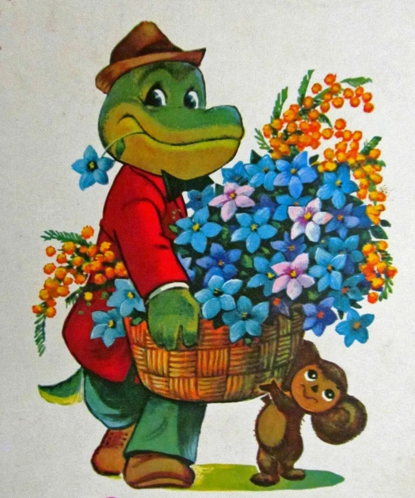

Изображение логотипа
Цветы в Ваш дом
Доставка любимых цветов в Ваш дом
Мы предлагаем:
Живые цветы и композиции
ЖЕЛАЕТЕ ПОДАРИТЬ СВОИМ ЛЮБИМЫМ ЯРКИЕ ОЩУЩЕНИЯ, БЛАГОСЛОВИТЬ МОЛОДОЖЕНОВ, ПОЗДРАВИТЬ ЗНАКОМЫХ С РОЖДЕНИЕМ РЕБЕНКА? ПРЕПОДНЕСИТЕ ИМ ЦВЕТЫ – ЭТО ЛУЧШИЙ СПОСОБ ВЫРАЗИТЬ СВОИ ЧУВСТВА И ЭМОЦИИ.
На данном сайте представлен огромный ассортимент букетов, композиций и охапок цветов. Все они являются авторскими произведениями и сделаны руками профессионального флориста, имеющего специальное образование и большой стаж работы. При изготовлении букетов и композиций гарантируются качество продукции, используются только самые свежие цветы от лучших поставщиков планеты.
Комнатные растения
Никто не станет спорить, что комнатные растения в доме создают особую атмосферу и уют. Не говоря уже о полезности многих комнатных растений, они становятся той самой живой ноткой, которая делает комнаты и нарядными, и необычными, и привносящими в интерьер то самое тепло, которое отсутствует во многих домах, даже обставленных по последней моде..
Композиции из домашних цветов можно составить так, что они будут не только радовать глаз, но и оздоровлять воздух, укреплять иммунитет, а то и вовсе исцелять от болезней.
Садовые растения
У опытного садовода на участке перед домом как правило есть красивые и яркие цветы, которые радуют глаз окружающих каждое лето.Особое место в цветнике отведено многолетникам.
Многолетние цветы очень облегчают жизнь садоводам, потому что не нуждаются в постоянном высаживании. Они отлично переносят морозные зимы и вырастают вновь каждую весну.
Вместе с тем однолетние цветы более удобны при оформлении ландшафтного дизайна, чем многолетники. С их помощью легко создаютсяцветочные насаждения самых различных форм, которые создают на участках интересные и роскошные пейзажи.
Оставить заявку
Наши клиенты получают цветы первыми!